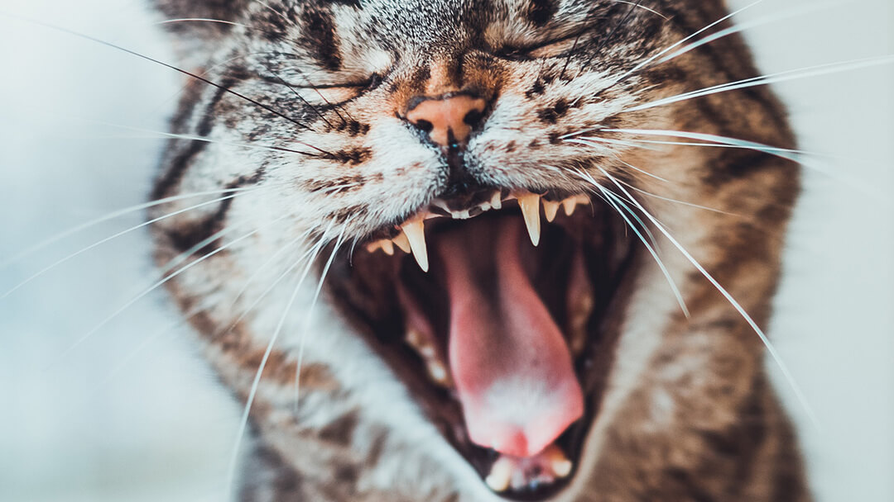
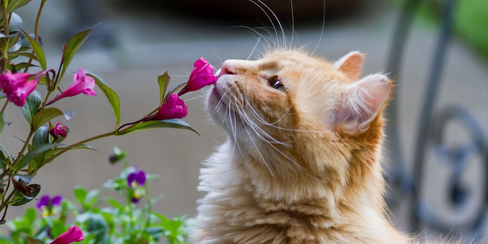
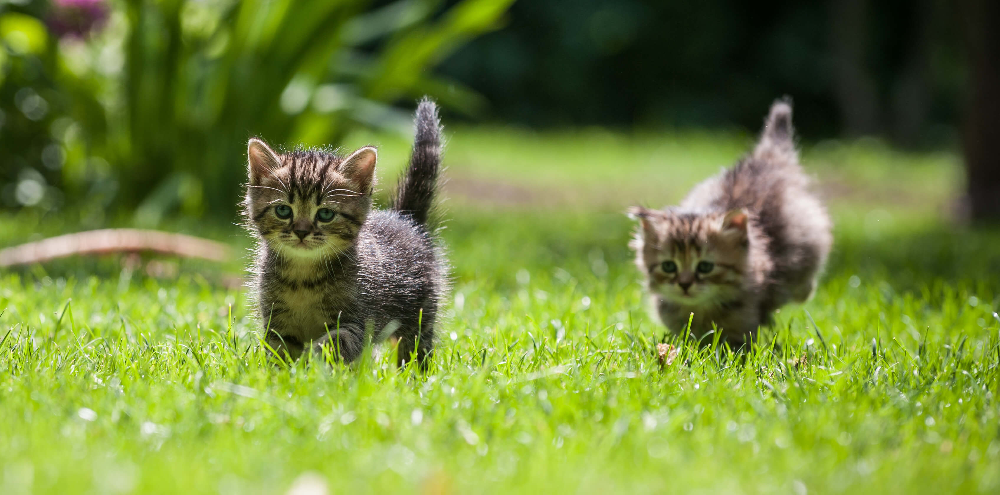

Table of Contents
Who are cats?

Cat, (Felis catus), domesticated member of the family Felidae, order Carnivora, and the smallest member of that family. Like all felids, domestic cats are characterized by supple low-slung bodies, finely molded heads, long tails that aid in balance, and specialized teeth and claws that adapt them admirably to a life of active hunting. Cats possess other features of their wild relatives in being basically carnivorous, remarkably agile and powerful, and finely coordinated in movement. It is noteworthy that the ancestors of the other common household pet, the dog, were social animals that lived together in packs in which there was subordination to a leader, and the dog has readily transferred its allegiance from pack leader to human master. The cat, however, has not yielded as readily to subjugation. Consequently, the house cat is able to revert to complete self-reliance more quickly and more successfully than most domesticated dogs. For an account of the relationship of the family of cats to other carnivores, see carnivore..
What are the types of cats?
Here are some types of cats
| Name | Appearance |
|---|---|
|
Evolution
It is by turns aloof and affectionate, serene and savage, endearing and exasperating. Despite its mercurial nature, however, the house cat is the most popular pet in the world. A third of American households have feline members, and more than 600 million cats live among humans worldwide. Yet as familiar as these creatures are, a complete understanding of their origins has proved elusive. Whereas other once wild animals were domesticated for their milk, meat, wool or servile labor, cats contribute virtually nothing in the way of sustenance or work to human endeavor. How, then, did they become commonplace fixtures in our homes? Scholars long believed that the ancient Egyptians were the first to keep cats as pets, starting around 3,600 years ago. But genetic and archaeological discoveries made over the past five years have revised this scenario—and have generated fresh insights into both the ancestry of the house cat and how its relationship with humans evolved. Cat’s Cradle The question of where house cats first arose has been challenging to resolve for several reasons. Although a number of investigators suspected that all varieties descend from just one cat species—Felis silvestris, the wildcat—they could not be certain. In addition, that species is not confined to a small corner of the globe. It is represented by populations living throughout the Old World—from Scotland to South Africa and from Spain to Mongolia—and until recently scientists had no way of determining unequivocally which of these wildcat populations gave rise to the tamer, so-called domestic kind. Indeed, as an alternative to the Egyptian origins hypothesis, some researchers had even proposed that cat domestication occurred in a number of different locations, with each domestication spawning a different breed. Confounding the issue was the fact that members of these wildcat groups are hard to tell apart from one another and from feral domesticated cats with so-called mackerel-tabby coats because all of them have the same pelage pattern of curved stripes and they interbreed freely with one another, further blurring population boundaries.
Feachers
Teeth
The cat’s teeth are adapted to three functions: stabbing (canines), anchoring (canines), and cutting (molars). Cats have no flat-crowned crushing teeth and therefore cannot chew their food; instead, they cut it up. Except for the canines and molars, the cat’s teeth are more or less nonfunctional; most of the cheek teeth do not even meet when the mouth is closed. The dental formula in all cats, for either side of both upper and lower jaws, is incisors 3/3, canines 1/1, premolars 3/2, and molars 1/1. The total number of teeth is 16 in the upper jaw and 14 in the lower. Primary, or milk, teeth number 24; these are replaced by the permanent teeth at about five months. Each half of the jaw is hinged to the skull by a transverse roller that fits tightly into a trough on the underside of the skull, making grinding movements impossible even if the cat had teeth suitable for grinding.
Coordination and musculature
Cats are among the most highly specialized of the flesh-eating mammals. Their brains are large and well developed. Cats are digitigrade; that is, they walk on their toes. Unlike the dog and horse, the cat walks or runs by moving first the front and back legs on one side, then the front and back legs on the other side; only the camel and the giraffe move in a similar way. The cat’s body has great elasticity. Because the vertebrae of the spinal column are held together by muscles rather than by ligaments, as in humans, the cat can elongate or contract its back, curve it upward, or oscillate it along the vertebral line. The construction of the shoulder joints permits the cat to turn its foreleg in almost any direction. Cats are powerfully built animals and are so well coordinated that they almost invariably land on their feet if they fall or are dropped.
Claws
There is a remarkable mechanism for retracting the cat’s claws when they are not in use. The claw is retracted or extended by pivoting the end bone of the toe, which bears the claw, over the tip of the next bone. The action that unsheathes the claws also spreads the toes widely, making the foot more than twice as broad as it normally is and converting it into a truly formidable weapon. This claw-sheathing mechanism is present in all species of the cat family except the cheetah. Although there are no nerve endings in the nail itself, blood capillaries are present in the inner part.
Senses
Cats are generally nocturnal in habit. The retina of the cat’s eye is made extra sensitive to light by a layer of guanine, which causes the eye to shine at night in a strong light. The eyes themselves, large with pupils that expand or contract to mere slits according to the density of light, do not distinguish colours clearly. Cats have a third eyelid, or nictitating membrane, commonly called the haw. Its appearance is used frequently as an indicator of the cat’s general state of health. The cat’s sense of smell, particularly well developed in the adult, is crucial to its evaluation of food, so that a cat whose nasal passages become clogged as a result of illness may appear to lose its appetite completely. Cats can distinguish the odour of nitrogenous substances (e.g., fish) especially keenly. The sense of touch is acute in cats. The eyebrows, whiskers, hairs of the cheek, and fine tufts of hair on the ears are all extremely sensitive to vibratory stimulation. The functions of the whiskers (vibrissae) are only partially understood; however, it is known that, if they are cut off, the cat is temporarily incapacitated. The toes and paws, as well as the tip of the nose, are also very sensitive to touch. Cats also have an acute sense of hearing. Their ears contain almost 30 muscles (compared with 6 in humans); as a result, they can turn them many times more quickly in the direction of a sound than can a dog. The ears of cats are receptive to ultrasonic frequencies up to 85,000 vibrations per second, greatly exceeding the hearing capabilities of dogs, which register 35,000 vibrations per second
Behaviour
The cat has a subtle repertoire of facial expressions, vocal sounds, and tail and body postures that express its emotional state and intentions. These various signals serve to increase, decrease, or maintain social distance. One distinctive social behaviour involves rubbing the side of the head, lips, chin, or tail against the owner and against furniture. These regions of the cat’s body contain scent glands that seem to play a role in establishing a familiar odour in the cat’s environment. The tongue of all cats, which has a patch of sharp, backward-directed spines called filiform papillae near the tip, has the appearance and feel of a coarse file; the spines help the cat to groom itself. The disposition to cleanliness is well established in cats, and they groom themselves at length, especially after meals.While lions and other big cats roar, domestic cats and other Felis species purr. Purring has been described as a low, continuous, rattling hum and often is interpreted as an expression of pleasure or contentment. Purring also occurs in cats that are injured and in pain, however, so that this vocalization can be seen as the cat’s “mantra”—that is, as a relaxing, self-comforting sound and a friendly mood-conveying signal.
Breeding
Estrus, or “heat” as it is commonly known, usually occurs for the first time in female cats at anywhere from four to six months of age. It is a period where their ovaries are capable of producing eggs, and if bred by a male cat during this time, it is likely that the mating will result in pregnancy.Breeding timing in cats can refer to the period of time during which a female cat, or queen, is most fertile, and the chances of a breeding resulting in pregnancy are at their highest. You may notice that the queen has become very vocal, yowling and meowing loudly and frequently. She may roll on the ground, make kneading motions with her back feet, and rub against you or your belongings. By showing these behaviors, she is showing any potential suitors that she is ready to mate and produce a litter of kittens.
About us
Students, Faculty of computing, Department of computing and Information system, Sabaragamuwa university of sri lanka
Belihuloya (70140)
Visit our websiteContacts
Email : thiliniharshaniabcd@gmail.com
Phone number : 0712317362